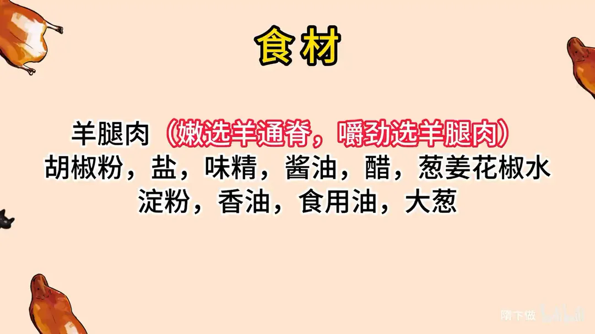
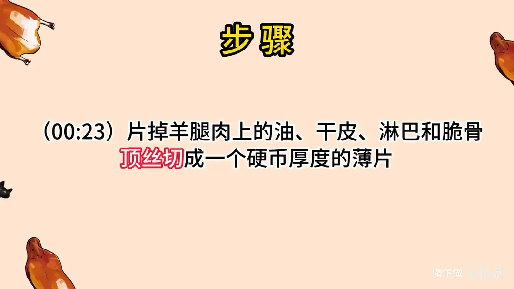
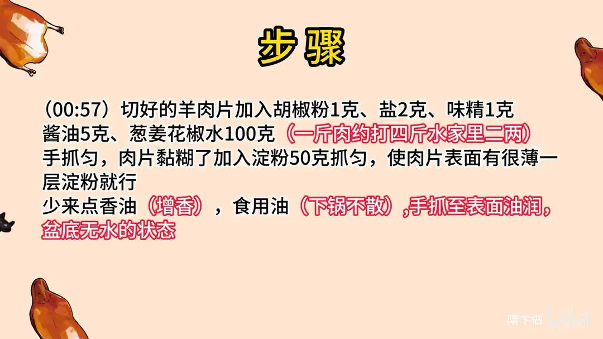
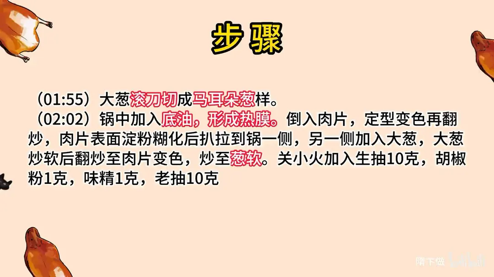
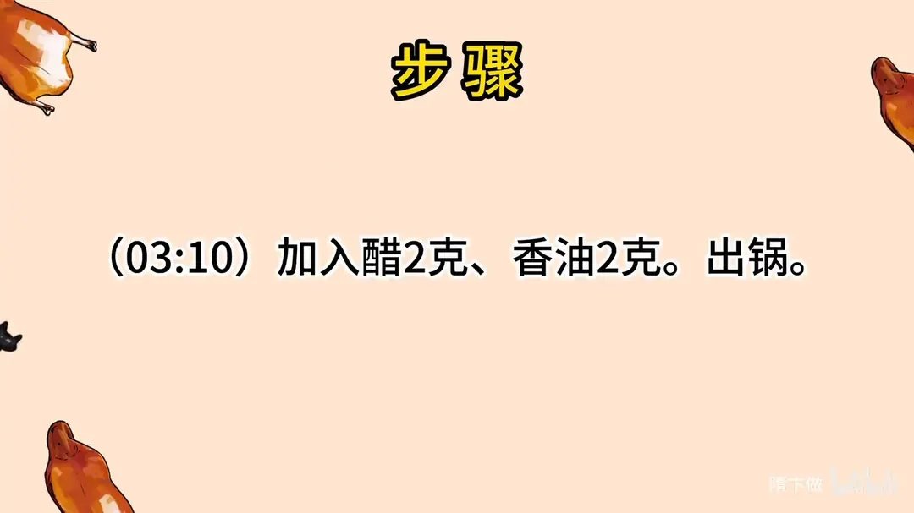

葱爆羊肉
隋卞一做。羊腿肉片掉油、干皮、淋巴和脆骨，顶丝切成硬币厚的薄片。100g 葱姜花椒水打进去，加 50g 淀粉薄薄裹一层，再淋香油和食用油封住。热锅底油滑至定型，大葱滚刀下锅炒软，生抽、老抽、醋、香油收味。
原视频：https://www.bilibili.com/video/BV1B8411B7tt
食材
羊腿肉、大葱、葱姜花椒水 等 16 样
| 类别 | 用料 | 用量 |
|---|---|---|
| 主料 | 羊腿肉 | 适量 |
| 腌料 | 胡椒粉 | 1g |
| 腌料 | 盐 | 2g |
| 腌料 | 味精 | 1g |
| 腌料 | 酱油 | 5g |
| 腌料 | 葱姜花椒水 | 100g |
| 腌料 | 淀粉 | 50g |
| 腌料 | 香油 | 少许 |
| 腌料 | 食用油 | 适量 |
| 配料 | 大葱 | 适量 |
| 炒制 | 生抽 | 10g |
| 炒制 | 老抽 | 10g |
| 炒制 | 胡椒粉 | 1g |
| 炒制 | 味精 | 1g |
| 炒制 | 醋 | 2g |
| 炒制 | 香油 | 2g |
步骤
- 切片：片掉羊腿肉上的油、干皮、淋巴和脆骨，顶丝（逆着肉纹）切成一个硬币厚度的薄片。
- 上浆：羊肉片加 1g 胡椒粉、2g 盐、1g 味精、5g 酱油、100g 葱姜花椒水，手抓匀；肉片黏糊后加 50g 淀粉抓匀，肉片表面挂上很薄一层淀粉即可。
- 封油：少来点香油增香，再加食用油让下锅不散，手抓至表面油润、盆底无水的状态。
- 切葱：大葱滚刀切成马耳朵葱样。
- 滑肉：锅中加底油，让锅面形成热膜；倒入肉片，定型变色后再翻炒。肉片表面淀粉糊化后扒拉到锅一侧，另一侧加入大葱，大葱炒软后与肉片同炒至肉片变色、葱软。
- 调味：关小火，加入 10g 生抽、1g 胡椒粉、1g 味精、10g 老抽。
- 出锅：加入 2g 醋、2g 香油，翻匀出锅。
小贴士
- 一斤肉约打四斤水，家里做打二两（100g）就够，水打进肉里肉片才嫩。
- 顶丝切是逆着肉纹切，口感不柴；厚度以硬币为准，太薄容易碎。
- 肉片下锅先别动，等定型变色再翻，避免脱浆、粘锅。
讲解要点
难度：★★★☆☆（不难在火候，难在上浆时淀粉的量）
为什么这么做
- 片掉干皮、顶丝切一硬币厚：干皮口感发柴，片下来可以穿羊肉串；逆着纹路切断纤维才不塞牙，太厚不易熟，肉难切就先冻一会儿再切。
- 用盐把肉抓到黏糊再加葱姜花椒水：盐让肉越抓越黏，100g 水才吃得进去，肉片才嫩。
- 淀粉只挂薄薄一层浅白：这层淀粉是保水的，也是成品「黏糊糊、表面带汁」的来源；多了会发黏、不易熟。
- 最后封香油和食用油：油把水分封在肉里，表面油润、盆底不见水，下锅时肉片才容易散开不粘。
- 锅烧到很热、润出锅的热膜再下肉：热膜隔在肉和锅之间才不粘；下锅别急着扒拉，等定型变色、淀粉糊化后再翻，自然就散了。
- 葱白滚刀、后下：这版羊肉味占七成、葱只占三成，葱是给羊肉增香的，炒软出香即可，不必炒到出水。
- 关小火调味、出锅前才烹醋和香油：酱油小火下不发黑不糊锅，醋和香油的香气也留得住。
容易翻车
- 淀粉抓过头，表面成了厚白糊，下锅黏成一坨还夹生；盆底还有水说明没抓到位。
- 锅没烧热、没润出锅的热膜就下肉，必然粘锅脱浆。
- 肉片刚下锅就扒拉，淀粉层被扯破，肉片又粘又散。
- 老抽只为找色，放多一点整盘发黑。
- 肉片切得太厚，外面熟了里面还生。
热评补充
- 这版全程一口锅、不用宽油过油，喜欢清爽少油做法的可以直接照着来。
原片尾卡





原片文案
AI 字幕校准稿
今天教你们一个大菜——葱爆羊肉。听这个名字可别怕，今天教你的是白版（简化版），对火候的要求没有那么高，跟传统鲁菜也不一样，但是味道不差。
羊肉就是买了一块羊腿肉。怕老怕带筋，就会买那个叫羊外脊，下面带点油，这是最嫩的；稍微有点嚼劲的，就选用羊腿肉。这个羊肉表面有一层干皮，给他片一下，不片做完以后口感就不太好了；这干皮可以穿羊肉串用。
好，我们开始切片，厚度大约一个硬币那么厚。太厚了不熟。你要觉得切不方便，就在冰箱里冻一下再切。买羊肉的时候看一下羊肉的纹路，稍微细腻一些的，那估计是小羊；纤维发粗的，那个老羊就适合炖。
切好的羊肉片咱们要腌制一下：胡椒粉、盐、味精，来上一点酱油，上点色一点点就行了，多了就黑了。然后再放点葱姜花椒水，浇完水之后用手抓。在盐的作用下，这个肉会越抓越黏糊。
黏糊了以后就加点淀粉，玉米淀粉。淀粉加多少量是很难的一个事，加完之后表面有很薄很薄的一层浅白色就行了；淀粉太多的话炒的时候就特别黏，不容易熟。这个淀粉是为了保持水分。然后里边少放点香油增香，再放点食用油，这一会儿下锅的时候它容易散。这样就表面油润、盆底一点水都没有，就可以了。
下一个步骤就是切葱，基本上都用葱白，滚刀切。全部都和完了，上火开炒。
锅里边放底油。肉不刮锅的关键，提前你要把这个锅润上，多热一会儿；锅在很热的情况下中间会有一层热膜，隔着下的肉就不粘了。先润一下锅，放底油，肉片放进去，不用着急扒拉它，等它定型了、变色了你再扒拉它，它就不粘了，表面的淀粉也就糊化了。
全部都变色了，靠边扒拉扒拉，然后把葱倒进去，把锅转一个方向使劲扒拉；葱软了之后就翻一翻，炒到肉片熟了、变色了、葱味发软了就行了。
关小火，放点生抽，然后放点老抽找个颜色，加胡椒粉、味精，出锅来点醋、香油，出锅。
崔老师点评：这个跟传统鲁菜的差别在于，传统葱爆羊肉是葱香和羊肉香一半一半相互交融；这个是羊肉的味道占七成、葱的味道占三成，葱的味道是为了给羊肉增香的。它下面没有汤，但整个吃的是那种黏黏糊糊的——就是羊肉片表面有一层汁，靠上浆时那薄薄一层淀粉起作用。那个是适合下饭的话，这个就是适合拌饭、拌面。这个版本把传统鲁菜跟清真版本综合中和了，但是变简单了：你看我也就一锅油，中间也没有倒葱，也是在一个锅里拌，就是一个懒人做法，味道不差，在家做一下吧。